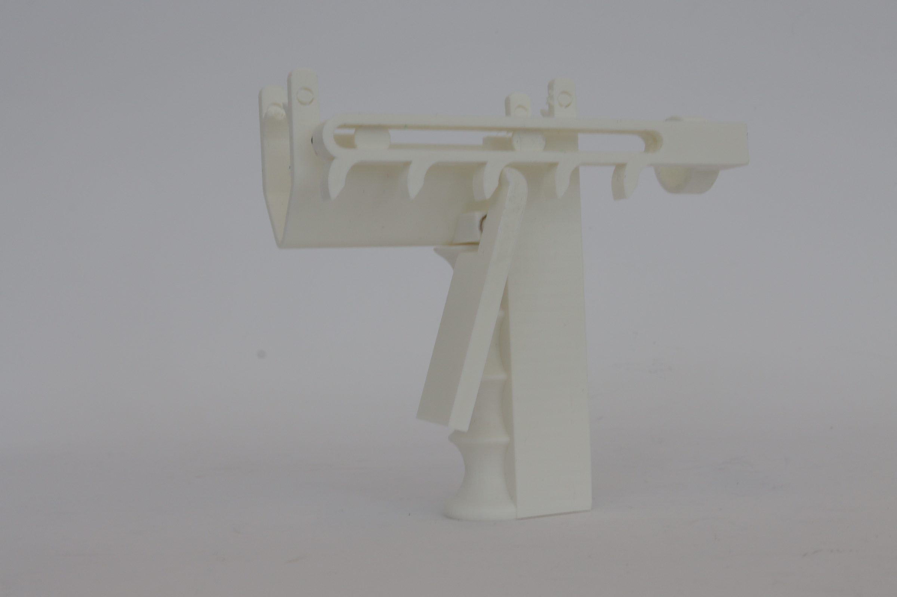
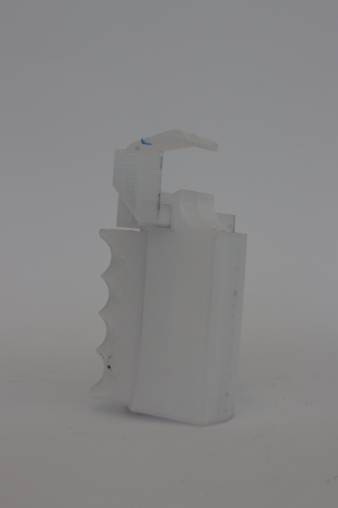

Case Study
Total Ergonomics™ — Micropipette Redesign
A user-centered design project that created an ergonomic micropipette add-on for a lab technician at risk of losing her job due to rheumatoid arthritis.
TL;DR
- Role
- Co-Designer — user research, concept development, prototyping, user testing
- Team
- Michael Dattolo & Mathew Hartung, with OTD students (Laura Carlson, Elizabeth Costello, Kelsey Gately)
- Duration
- Full semester — IDES 2030 User Centered Design, JWU
- Tools
- User interviews, cold-call research, Rhino 3D, physical prototyping, user testing
- Outcome
- Foot-pedal design selected as preferred solution by users; eliminates hand strain entirely for pipetting tasks
Problem
Approximately 500,000 people use micropipettes daily in the United States alone. Lab technicians regularly pipette for 2–4 hours per day—around 350 hours per year—and 90% experience hand pain or repetitive strain injury (RSI). The repetitive thumb-pressing motion causes tendonitis, carpal tunnel syndrome, and accelerates the symptoms of rheumatoid arthritis.
Our client, Hannah, is a 26-year-old female lab technician diagnosed with Juvenile Rheumatoid Arthritis. The repetitive strain of daily micropipette use was putting her career in jeopardy—she was at risk of losing her job because she physically couldn't perform the core task reliably anymore.
The brief: design an ergonomic micropipette add-on device that removes the repetitive strain from pipetting, allowing technicians like Hannah to continue working comfortably and accurately.
Constraints
Real client, real stakes: This wasn't a theoretical exercise. Hannah needed a working solution. Every design decision had to be validated against her specific condition and daily workflow.
Precision requirements: Micropipettes dispense volumes measured in microliters. Any add-on must maintain the same fine volume control that direct thumb operation provides.
Lab environment: The solution must be cleanable, sterilizable, and compatible with existing lab furniture and protocols. No bulky rigs that block bench space.
Interdisciplinary collaboration: We worked alongside Occupational Therapy Doctorate students from JWU who brought clinical expertise on RSI and joint protection strategies.
My Role
Mat and I split the work evenly. I led the user-research phase—conducting interviews with Hannah, writing cold-call scripts for market-validation conversations with lab managers, and coordinating user-testing sessions with the OTD students. On the design side, I developed all three concept directions (foot pedal, pistol grip, palm grip), built physical prototypes, and ran the comparative user-testing sessions that determined the final direction.
Approach
We followed a rigorous user-centered design process: Research → Ideate → Prototype → Test → Iterate.
Research: Interviewed Hannah about her daily workflow, pain points, and limitations. Reviewed medical literature on RSI and micropipette-related injuries. Conducted cold-call research with labs to understand market need and willingness to adopt.
Ideation: Generated 15+ initial concepts, then converged on three fundamentally different approaches to removing hand strain:
- Foot Pedal — Completely removes hand action by transferring the plunger-press motion to the foot. Uses the larger muscles of the leg instead of the thumb. Adjustable angle, responsive mechanism for precise volume control. User can switch feet to distribute fatigue.
- Pistol Grip — A trigger-operated grip that wraps around the micropipette. Distributes pressing force across the palm and fingers instead of concentrating it on the thumb. Reduces wrist and forearm stress through a more natural grip angle.
- Palm Grip — Encases the micropipette in a larger ergonomic shell controlled by subtle palm movements. Eliminates the need for any fine motor skill, making it accessible to users with severe joint limitations.
Testing: All three prototypes were tested with Hannah and reviewed by the OTD students for clinical validity. Users rated each design on comfort, precision, ease of use, and fatigue reduction.
Key Decisions
Three concepts, not one: Rather than betting on a single direction early, we developed three fundamentally different approaches and let user testing decide. This avoided premature commitment and gave us genuine comparative data.
OTD collaboration: Partnering with Occupational Therapy students (Laura, Elizabeth, Kelsey) gave us clinical insight we couldn't get from product design alone. They evaluated each design against joint-protection principles and RSI prevention frameworks, catching ergonomic issues we'd missed.
Foot pedal as radical rethinking: The pistol grip and palm grip are incremental improvements to the hand interaction. The foot pedal is a radical departure—moving the interaction entirely to a different body part. User testing validated that this "bigger bet" was the right call.
Iterations
Round 1 — Paper prototypes & ergonomic sketches: Sketched all three concepts, evaluated grip angles and force vectors with the OTD team, and eliminated two weaker sub-concepts (a wrist-brace variant and a motorized assist) before building physical prototypes.
Round 2 — Physical prototyping: Built working prototypes of each design. The foot pedal connected to the micropipette via a cable-actuated mechanism; the pistol grip and palm grip were 3D printed shells. Ran initial comfort tests with Hannah.
Round 3 — Comparative user testing: Structured testing sessions where Hannah performed realistic pipetting tasks with each design, rating comfort, precision, speed, and fatigue. The OTD students observed and scored each session against clinical ergonomic criteria. The foot pedal was unanimously preferred—it completely eliminated hand strain, maintained precise volume control through the responsive pedal mechanism, and allowed Hannah to maintain proper upright posture throughout.
Outcome
The foot pedal design was selected as the final solution. By transferring the repetitive pressing motion from the thumb to the foot, it completely eliminates the hand strain that threatened Hannah's career. Key results:
- Comfort: Rated highest by all testers—allows switching feet, adjustable pedal angle, and maintains seated posture.
- Precision: The responsive cable mechanism provides the same fine volume control as direct thumb operation.
- Accessibility: Users with severe hand/wrist conditions can pipette normally, something no existing product enables.
- Market potential: With 500,000 daily users and 90% reporting pain, the addressable market is substantial. Cold-call research confirmed labs are willing to invest in ergonomic solutions.
The project was documented in a comprehensive Pipette Pedal Research brief prepared for sales conversations with laboratory purchasing managers.
Next Steps
The immediate priority is a refined functional prototype with adjustable cable tension, a broader range of pedal angles, and compatibility testing across the five most common micropipette brands. Clinical trials with a broader user group (beyond Hannah) would strengthen the evidence base for commercialization.
Project Gallery


